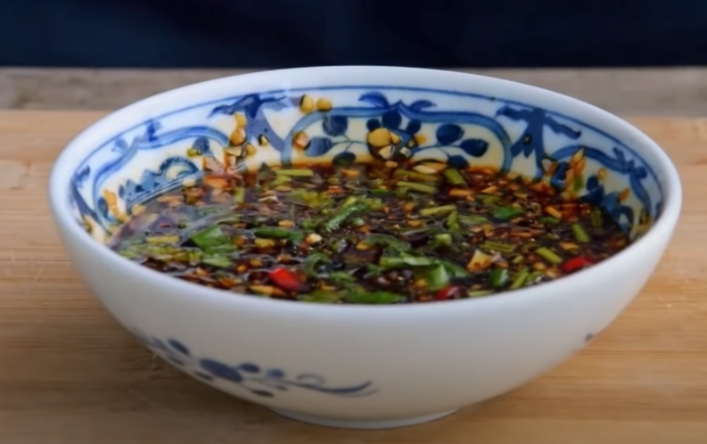

Liangban Sauce

Liangban(凉拌) Sauce is a chinese sauce usually used in salads or appetizers, but can be used on much more.
a savory, sweet, and salt sauce, it is perfect over many different types of vegetables, meats, and even
simply over rice. It is a simple recipe that only requires mixing of ingredients. The hardest part is
probably getting all the different types of sauces.
Ingredients
- 4 tbsp light soy sauce
- 2 tbsp dark Chinese vinegar (balsamic is okay too)
- 1 tbsp oyster sauce
- 1 tbsp sugar (you can add less depending on your tastes)
- 4 cloves of garlic
- 1 fresh heaven facing or Thai birds eye chili
- ½ tbsp toasted sesame oil
- two sprigs of cilantro
Steps
- Slice the chilis
- Mince the garlic
- Chop the cilantro, but reserve half for later
- Mix all the sauces and oils together
- Add in the chilis, garlic, and half the cilantro. Mix again
- garnish with the other half of the cilantro when the sauce is about to be used.
recipe was covered by chinese cooking demystified check them out